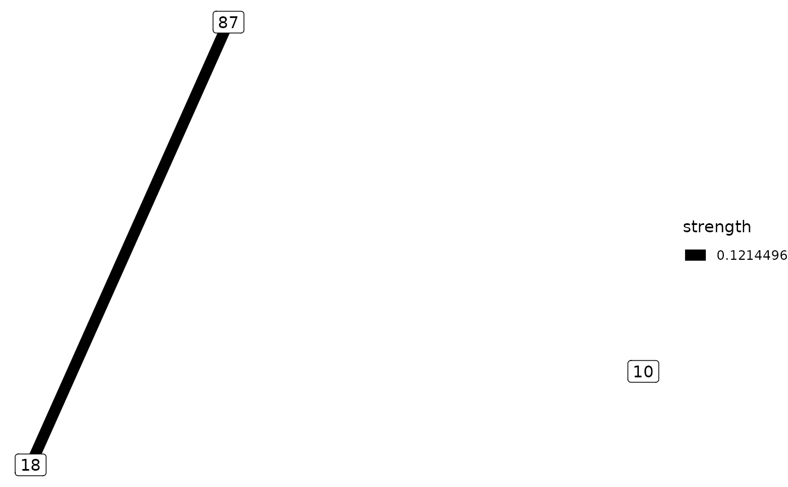

The position of the nodes is based on the similarity between them.
Source:R/plot_data.R
plot_similarity.RdThe position of the nodes is based on the similarity between them.
Plot how similar are the data
Value
A list with two elements:
nodes: The position and name of the nodes
edges: The information about the selected edges
A ggplot object
Examples
if (require("org.Hs.eg.db") & require("reactome.db")) {
# Extract the paths of all genes of org.Hs.eg.db from KEGG
# (last update in data of June 31st 2011)
genes.kegg <- as.list(org.Hs.egPATH)
# Extracts the paths of all genes of org.Hs.eg.db from reactome
genes.react <- as.list(reactomeEXTID2PATHID)
sim <- mgeneSim(c("87", "18", "10"), genes.react)
pd <- plot_data(sim, top = 0.25)
if (requireNamespace("ggplot2", quietly = TRUE)){
plot_similarity(pd)
}
}
